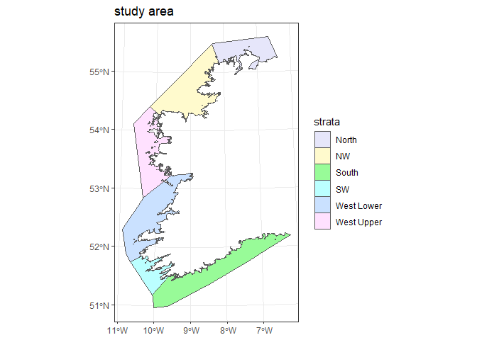
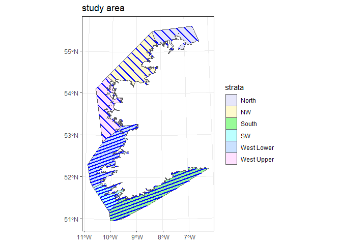
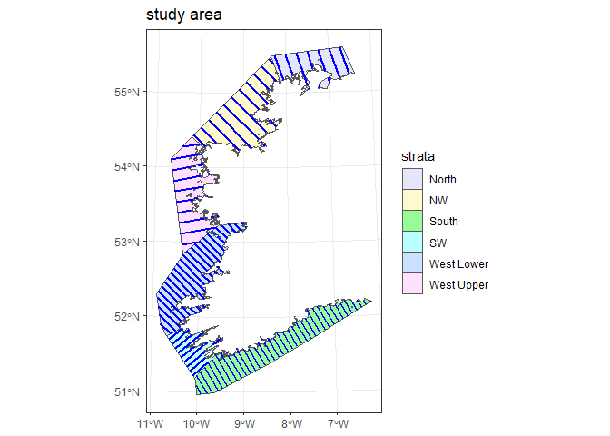
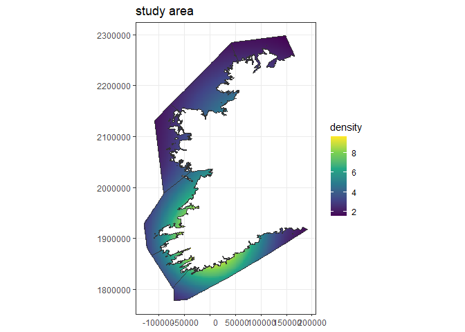
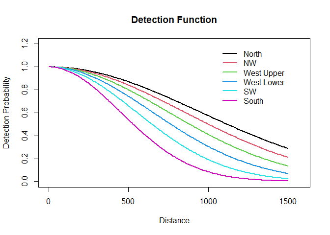
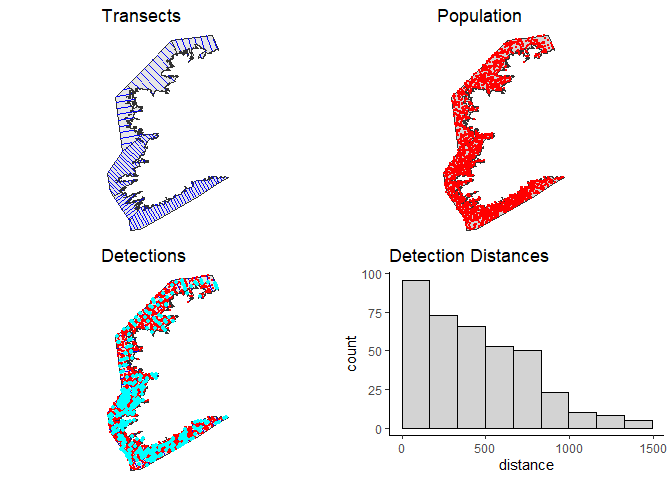

Grouping strata during simulation
L. Marshall
CREEM, Univ of St AndrewsApril 2025
Source:vignettes/dsims_grouped_strata.Rmd
dsims_grouped_strata.RmdThese example simulations demonstrate the option to group strata at the analysis stage during a simulation. There are different reasons why we may wish to divide our study region into strata, or perhaps strata into sub strata, but sometimes we might need to create strata purely to optimise the design. For example, if we have a narrow study region that follows a coastline and we wish to keep our lines perpendicular to the coast then we may need to divide the region into strata and use different design angles in each stratum. Assuming we keep the coverage constant across these strata, the data can then be grouped at the analysis stage. We will illustrate an example of grouping strata at the analysis stage below.
Getting started
Ensure you have administrator privileges on your computer and install the necessary R packages.
Running the simulation and viewing the results for yourself
It is advisable to download the .Rmd file if you would like to replicate the simulations for yourself. In addition, results from these simulations are provided to allow you to compile the .Rmd document. The results are included in a zip archive results.zip. Uncompressing the contents into a folder called results within the same folder as the .Rmd file should give you the required structure to run the code in the .Rmd file. You should end up with the file sim.results.ROBJ within the results folder.
Creating a grouped strata simulation
Creating a region object
First, we create the region object using a shapefile stored within the package directory. The shapefile provided contains a marine study area off the coast of Ireland. This region has already been projected into metres and dssd will detect that from the shapefile .prj file. The study region has also been divided into six strata and we will provide names in the code below to identify them (“North”, “NW”, “West Upper”, “West Lower”, “SW”, “South”). Care should be taken to check that the order of the strata is as expected by checking a plot of the study region.
The division of the study area into six strata was for design purposes, this allows us to specify design angles for each stratum individually. However, for analysis purposes we are interested in estimates for only two distinct areas in this study region, these will consist of the three northern strata grouped together and the three southern strata grouped together.
# Find the full file path to the shapefile on the users machine
shapefile.path <- system.file("extdata", "AreaRProjStrata.shp", package = "dssd")
# Create the region object
region <- make.region(region.name = "study area", strata.name = c("North", "NW",
"West Upper", "West Lower", "SW", "South"), shape = shapefile.path)
# Plot the survey region
plot(region)
Creating a design object
As mentioned above, we have two sub regions of interest in this study area, for which we would like estimates of density / abundance (the northern three strata and the southern three strata). Let’s start by constructing our design as though we had only divided our study region into two strata. We expect more animals in the southern strata so we will implement a non-uniform coverage design by allocating more effort per unit area (i.e. higher coverage) to this strata than the northern strata.
Let’s assume that our effort calculations have suggested that we have sufficient resources to survey parallel lines with a spacing of 16,000m in the northern strata and a spacing of 8,000m in the southern strata. Note that as our shapefile units are metres, all our simulation measurements must also be provided in metres. We will supply a single design angle for the three northern strata and one for the three southern strata, let’s set these to be 135 and 70 degrees, respectively. We will also specify that we will be doing minus sampling and do not expect to observe animals beyond 1,500m.
We will generate a set of transects from this design and assess them for desirable design qualities.
# Define a design based on only two strata
design <- make.design(region = region, transect.type = "line", design = "systematic",
spacing = c(rep(16000, 3), rep(8000, 3)), design.angle = c(135, 135, 135, 70,
70, 70), edge.protocol = "minus", truncation = 1500)
# Generate and plot a single set of transects
survey <- generate.transects(design)
plot(region, survey)
An optimal design will aim to both maximise the number of samplers (many short lines are better than fewer long lines) and place them parallel to any density gradients. In the case of a long thin study region such as this, we want to lay the transects across the short dimension of the region (i.e. perpendicular to the coast). It is also often the case that marine species are distributed in relation to the coast (usually having a particular depth preference) so again laying the transects perpendicular to the coast should align them parallel to any density gradient and thereby reduce variability in encounter rate between transects resulting in more precise estimates.
We can see from this first design, given the complexity of the region, choosing a single design angle for the northern and southern groups of strata is not going to achieve this goal. This is particularly problematic in the southern strata where selecting a design angle to give lines perpendicular to the coast in one area gives lines that are parallel to the coast in another. We now make use of the fact that we have six strata and select appropriate design angles in each with the aim of orientating the transects so they are perpendicular to the coast.
# Define the design
design <- make.design(region = region, transect.type = "line", design = "systematic",
spacing = c(rep(16000, 3), rep(8000, 3)), design.angle = c(160, 135, 80, 135,
50, 150), edge.protocol = "minus", truncation = 1500)
# Create a single set of transects to check
survey <- generate.transects(design)
plot(region, survey)
We can see from the image above that further dividing the northern and southern regions of interest into substrata allows us to better orientate our lines to both maximise the number of samplers and place them perpendicular to the coast.
As this further stratification was purely for design purposes (so we could modify the design angle as we moved along the coast) we would still treat each of the three substrata as one when we come to analyse the data. However, it is important to note that we can only do this because we have kept a uniform coverage across the substrata. However, the above design would not allow us to simply group all 6 strata at the analysis stage. As the northern strata have lower coverage than the southern strata the full dataset will be more representative of the southern strata than the northern and we must therefore ensure that any differences in detectability are modelled.
Creating a density object
We will create a density surface to represent a distribution of animals which is more abundant in the south and also prefers coastal waters.
In order to get an idea of where to place the hostpots we can first check the range of the coordinates on the projected scale. Note that the plot of the region gives the scale in lat and lon despite the region being projected. We can access this information by requesting the bounding box of the sf object stored within the dssd region.
# Get the bounding box of the sf object within the region
sf::st_bbox(region@region)We can now create a density grid with a spacing of 2,500m in both dimensions and add two hotspots to simulate a potentially realistic distribution of animals which prefer to stick closely to the coast. Adding hotspots is largely done by trial and error once we know the range of the x-y coordinate values. Again all measurement values must be provided in metres. As we will later use a fixed population size in the simulations, we do not need to worry about the exact values we provide in the density grid only how they relate to one another. For example, an area with a density cell with a value twice that of another density cell will, on average, end up with twice as many animals when the population is generated.
# Make a density grid with values of 1 across the region
my.density <- make.density(region = region, x.space = 2500, y.space = 2500, constant = 1)
# Add a hotspot at coordinates (0, 1900000)
my.density <- add.hotspot(my.density, centre = c(0, 1900000), sigma = 70000, amplitude = 10)
# Add a hotspot at coordinates (80000, 210000)
my.density <- add.hotspot(my.density, centre = c(80000, 2100000), sigma = 1e+05,
amplitude = 5)
# Plot this example density surface
plot(my.density, region)
Population size
We will base our simulation on a total population size of 2,500 animals. As the make.population command requires us to specify how many individuals per stratum, we will have to calculate this using the density summary.
# View the density summary
summary(my.density)## strata area ave.N ave.D
## 1 North 4176461143 [m^2] 8731625315 2.090676
## 2 NW 8180996497 [m^2] 25656220203 3.136075
## 3 West Upper 6316380968 [m^2] 17438152704 2.760782
## 4 West Lower 8188111047 [m^2] 41315196625 5.045754
## 5 SW 2654685511 [m^2] 13585880563 5.117699
## 6 South 9291229356 [m^2] 48534037861 5.223640We can see from the table that if we used the exact densities in the density grid we would generate a lot of animals (see ave.N column)! However, as mentioned above, the simulation will only use this density surface as a guide to relative density across the region. Therefore, we will use these value to decide how many animals to allocate to each strata by scaling them.
# Extract average N values
ave.N.vals <- summary(my.density)@summary$ave.N
# Scale average N vals to sum to 2500
N.per.stratum <- round(2500 * ave.N.vals/sum(ave.N.vals))
# View the allocation per stratum
N.per.stratum## [1] 141 413 281 665 219 781
# Check the total sums to 2500 (sometimes rounding may cause slight variation)
sum(N.per.stratum)## [1] 2500At this point, we will also create an individual level covariate to indicate whether the animals are in the northern group of strata or the southern group of strata. We will do this to enable us to later model any differences in detectability between the northern and southern sub populations. Ignoring any differences would not only lead bias in our estimates of abundance for the northern and southern strata but also in our total estimates due to the non-uniform coverage design.
# Create the population description
covs <- list()
# Adds a strata group entry allocating 'North' to all animals in the North, NW
# and West Upper strata and allocating 'South' to all animals in the West
# Lower, SW and South strata.
covs$strata.group <- data.frame(level = c(rep("North", 3), rep("South", 3)), prob = rep(1,
6), strata = c("North", "NW", "West Upper", "West Lower", "SW", "South"))We will now include the above information in our population description and set the fixed population size argument to be true.
# Create the population description
pop.description <- make.population.description(region = region, density = my.density,
covariates = covs, N = N.per.stratum, fixed.N = TRUE)True detection function
We will simulate using a half-normal detection function but change \(\sigma\) (scale.param) depending on stratum and use a truncation distance of 1500m. By changing the detection functions across strata we can demonstrate when pooling robustness applies. Pooling robustness refers to a property in distance sampling which allows us to obtain unbiased abundance estimates from a single ‘pooled’ detection function fitted across a number of sub populations, even when detectability may vary greatly, (Rexstad, Buckland, Marshall, & Borchers, 2023). Pooling robustness applies when our data are a representative sample across the population for which we are generating estimates. In this example, the data in our three northern sub-strata can be pooled and the data in our three southern sub- strata can be pooled as these have the same coverage as each other. We cannot pool detections from any strata / sub-strata where coverage varies (without accounting for the non-uniform coverage) as the resulting detection function will be more representative of the strata with higher coverage.
# Create the detectability
detect <- make.detectability(key.function = "hn", scale.param = c(950, 850, 750,
650, 550, 450), truncation = 1500)
# Plot the detectability
plot(detect, pop.description)
Creating the analyses object
The simulation engine currently only fits one global detection function to each simulated dataset. In the scenario we have constructed, we know that pooling robustness does not apply across the study region as a whole as we have different levels of coverage between the northern and southern stratum groups. Given we cannot fit separate detection functions, we must allow our model to be able to vary the detection function across the two groups of strata. To achieve this we can include the strata.group covariate (which we included in the population description) in the model, this will allow a different scale parameter to be estimated for the northern three strata than for the southern three.
Note that we could have simply included Region.Label as a covariate in the detection function model, however, within the simulation at the stage of fitting the detection function all strata are included in the dataset and this would have resulted in a scale parameter being estimated for all 6 strata individually.
It is at the analysis stage that we also need to define how the strata will be grouped in order to obtain estimates for our regions of interest. The dataframe created in the code below tells the simulation how to group the strata.
# Create a dataframe describing how the strata will be grouped
group.strata <- data.frame(design.id = c("North", "NW", "West Upper", "West Lower",
"SW", "South"), analysis.id = c(rep("North", 3), rep("South", 3)))
# View the dataframe
print(group.strata)## design.id analysis.id
## 1 North North
## 2 NW North
## 3 West Upper North
## 4 West Lower South
## 5 SW South
## 6 South SouthWe will now define the analyses. As we are simulating detections from a range of difference detection functions, we will incorporate some model uncertainty by allowing the simulation to select between a half normal and a hazard rate model. Both these models will include the strata.group covariate and we will use the AIC as the criterion for model selection.
# Define the analyses - both the hn and hr models use the ~strata.group formula
ds.analyses <- make.ds.analysis(dfmodel = list(~strata.group, ~strata.group), key = c("hn",
"hr"), truncation = 1500, group.strata = group.strata, criteria = "AIC")Running the simulation
Before running the simulation we group all the components into a simulation object and define the number of repetitions. For this example we will simulate 1000 surveys from our simulation definition. Note that the first time you run a simulation you should limit the number of repetitions to only a few to check everything works as expected.
# Create the simulation
simulation <- make.simulation(reps = 1000, design = design, population.description = pop.description,
detectability = detect, ds.analysis = ds.analyses)A useful way to check the simulation setup is to generate a single example survey, this may take a moment to complete.
# Simulate the data generation for a single survey
eg.survey <- run.survey(simulation)
# Plot the example survey
plot(eg.survey, region)
If the previous plots lead you to believe you have properly parameterised your simulation, it is time to run it. If you run it for a small number of repetitions it should only take a minute or two to complete, running for a 1000 repetitions will take considerably longer and so this simulation has already been run and the results can be loaded instead.
# Run the simulation in parallel
simulation <- run.simulation(simulation, run.parallel = TRUE)
# Load the simulation object which has already been run
load("files/sim.results.ROBJ")After you have loaded the simulation with the results, you can view them. To view the full summary use summary(simulation), below we will store the simulation summary and look at specific tables within it. Firstly, we will view the summary table. Notice that as requested we have results for only a northern and a southern strata instead of all six of the substrata. The summary table indicates that around 98 detections were made on average in the northern strata and 275 in the southern strata. It is important to check that there are sufficient detections in each strata so that any differences in detectability can be accurately modelled in the detection function.
# Create a summary (silently without the description)
sim.summary <- summary(simulation, description.summary = FALSE)
# Display the summary table
sim.summary@individuals$summary## mean.Cover.Area mean.Effort mean.n mean.k mean.ER mean.se.ER
## North 3498729895 1166243 98.490 27.912 8.445558e-05 9.150347e-06
## South 7551517574 2517173 274.998 71.931 1.092477e-04 7.244126e-06
## Total 11050247469 3683416 373.488 99.843 9.731804e-05 5.812492e-06
## sd.mean.ER
## North 7.782846e-06
## South 5.842293e-06
## Total 4.780433e-06Next we will view the table giving the abundance estimates. There is only a small amount of negative bias for both strata and in the total estimate of abundance. However, the coverage of the confidence intervals (which should be 0.95) is only 0.92 for the southern strata and the total estimate. Sometimes reduced confidence interval coverage can be due to the variance being under estimated but in this case the mean.se (mean of the estimated standard error) and the sd.of.means (truth - observed standard error of the estimates) are very close suggesting the variance has been estimated accurately.
# Display the table of abundance estimates
round(sim.summary@individuals$N, 3)## Truth mean.Estimate percent.bias RMSE CI.coverage.prob mean.se
## North 835 819.344 -1.875 111.016 0.956 115.122
## South 1665 1604.102 -3.658 145.372 0.924 132.674
## Total 2500 2423.446 -3.062 193.676 0.915 176.878
## sd.of.means
## North 109.962
## South 132.068
## Total 177.993Discussion
Even though the detectability of animals was varied across each of the six sub-strata, the estimates for the northern and southern groups of sub-strata combined had very low bias. This result was due to pooling robustness applying across both these groups of sub strata (coverage was the same in each group). Meanwhile, the difference in detectability between the northern and southern groups was modelled explicitly using the strata.group covariate in each of the models. If the simulation was repeated, but this covariate was omitted, we would expect to see bias in the abundance estimated for the northern and southern regions as well as the overall estimate. This would be due to the differences in coverage between the three northen sub-strata and the three southern sub-strata and the fitted detection function being more representative of the southern region (due to the higher coverage) than the northern region.
The setup for the analysis in this simulation is a little complex due to the restrictions of the simulation package (i.e. needing to include the stratum covariate in the population description). When analysing your own distance sampling data from the field, if you have a similar scenario, you will be able to either fit separate detection functions to the data from the different regions of interest or create any kind of stratum variable you want, giving you more analysis options.